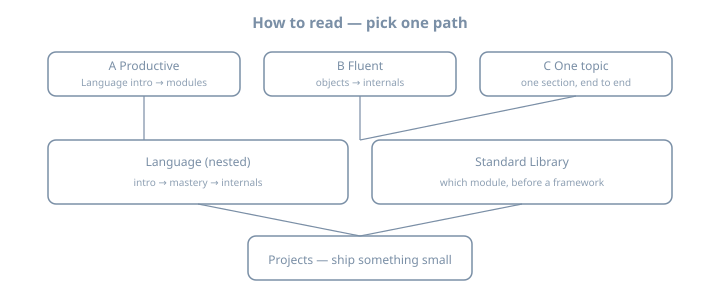

Python
Everything Python — Comprehensive Syllabus
A deep library, not a single linear course. Use a path below so the sidebar does not feel endless.
Baseline: Python 3.14 · toolchain uv + a virtual environment · type hints after the first syntax pass.
This book is self-contained. You do not need any other title in this library (Linux, Maths, Networking, Go, …) to read it. The published sidebar is three parts for now: Language, Standard Library, and Projects. Other domains (CS, maths, data/AI, ops, apps) are parked and will be organized later — they will stay Python + that domain, a small experiment here, not a second textbook from elsewhere.
How to read this book (pick a path)
Path A — Productive Python (≈ 2–4 weeks)
Language: Intro → Getting started → Syntax → Control → Functions
→ Data structures → Modules
→ one small project in Projects
Path B — Fluent Python / internals
Language: Objects → Errors/I/O → Typing → Idioms → Concurrency
→ Internals (object model, bytecode, GIL / free-threading)
→ Standard Library tour
Path C — depth on one topic
Pick one Language section, or the Standard Library map, and work it end-to-end
1. Language
Linux-style tree: section → chapter, with Internals nested under Language.
- Intro: why Python exists; language vs CPython vs the ecosystem; how to read this library; the 2026 map (3.14, free-threading,
uv). - Getting started: install; editors and fonts (VS Code family, Zed, Sublime, …); Linux CLI-only; REPL vs file; first program; project layout.
- Core language: types, control flow (
match), functions, lists/dicts/sets, modules anduv, classes, exceptions andpathlib. - Craft: stdlib essentials, typing, pytest, idioms, concurrency.
- Internals: object model, names and frames, bytecode and eval, GIL and official free-threading (PEP 703 / 779), GC, import system, descriptors.
Start at Language → Intro. Do not open Internals until you can write a small module and a test.
2. Standard Library
A reference tour: when to reach for which module before a framework. Language → Stdlib essentials is the working set; this part is the map (pathlib, json, datetime, argparse, collections, subprocess, …).
3. Projects
Build practice that uses Language + the standard library: a temperature CLI, file/rename scripts, word counts, then grow from there.
How chapters are written
Most Language pages include:
- A one-sentence goal
- A mental model (ASCII, sometimes SVG)
- A complete file you can save (
# name.py) and run withuv run python name.py
- Named worked examples, each also a complete file, with expected output
- Pitfalls
- An optional Python + CS or Python + maths note (a small experiment in this book)
- Exercises
- Further reading (docs, PEPs, named books — original prose only)
Prerequisites
- A computer, a terminal (the text window where you type commands), and a text editor you already like
- Willingness to type programs, break them, and read the traceback
- No prior Python, and no other book from this library. Some programming experience helps but is not required for Path A
Conventions
- Examples assume Python 3.14 unless a page says otherwise.
- Prefer
uvfor installing Python and creating environments;pip+venvare still shown so you can read older projects. - Format and lint with Ruff when a project exists; do not bikeshed style in the first week.
- Worked examples over API dumps.
Formats
HTML, PDF, and EPUB when built via the monorepo portal.
Acknowledgments
The syllabus is distilled from the official tutorial and from widely used books and courses (Sweigart, Matthes, Downey, Lutz, Slatkin, Ramalho, Beazley, Shaw, and others listed in content/_planning/syllabus.md). Chapters are original teaching text for this library, not extracts.